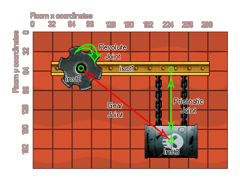

physics_joint_gear_create
Create a gear joint using two revolute joints or a revolute and a prismatic joint.
Syntax :
physics_joint_gear_create(inst1, inst2, joint_1, joint_2, ratio)
| Argument | Description |
|---|---|
| inst1 | The first instance to connect with the joint |
| inst2 | The second instance to connect with the joint |
| joint_1 | A previously defined revolute joint |
| joint_2 | A previously defined revolute or prismatic joint |
| ratio | Set the velocity ratio between the two joints |
Returns : index of the joint
Description
If you want to create a sophisticated mechanical contraption you might want to use gears. In principle you can create gears in GameMaker:Studio by using compounding instances to model gear teeth, but
this is not very efficient and might be tedious to author! Thankfully there is a simpler method, and that is to use a gear joint. To make one you need to have previously defined your fixtures and created
the two basic joints that are going to comprise your gear - these must be made up of one revolute joint and either a
prismatic joint or another revolute joint. The image below shows how a gear would typically be created in a game:

So what happens? Well, once the two joints are added into the gear, interaction with one will have an effect on the other, so in the example image above, if you rotate inst2, inst3 will move up and down, or if you
move inst3 up and down then inst2 will rotate. You can also change the gear ratio, meaning that you need to move one instance more (or less) to get the desired effect. The code in the example at the bottom shows
how something like the image above can be created.
Note : If you need to delete either of the two instances that are involved in the gear joint (or just delete their joints) then you must delete the gear joint first using
physics_joint_delete() or else you will get an error!
Example :
var t_fix, g_fix, inst1, inst2, inst3, r_joint, p_joint;
g_fix = physics_fixture_create();
physics_fixture_set_box_shape(g_fix, 40, 10);
t_fix = physics_fixture_create();
physics_fixture_set_circle_shape(t_fix, 10);
physics_fixture_set_density(t_fix, 0.5);
inst1 = instance_create(60, room_height - 30, obj_Ground);
inst2 = instance_create(40, room_height - 300, obj_Cog);
inst3 = instance_create(150, room_height - 300, obj_Barrel);
physics_fixture_bind(inst1, g_fix);
physics_fixture_bind(inst2, t_fix);
physics_fixture_bind(inst3, t_fix);
r_joint = physics_create_revolute_joint(inst1, inst2, 40, room_height - 300, -80, 80, 1, 10, 0.5, 1, 0);
p_joint = physics_create_prismatic_joint(inst1, inst3, 150, room_height - 300, 0, 1, -10, 10, true, 0, 0, 0, 0);
physics_create_gear_joint(inst2, inst3, r_joint, p_joint, 0.5);
The above code creates and defines two fixture and then creates three instances, one "obj_Ground" and two others, "obj_Cog" and "obj_Barrel". The fixtures are then bound to these instances and two joints are created. A revolute joint between the ground and the cog, and a prismatic joint between the ground and the barrel. Finally a gear joint is created between the cog and barrel instances using the previously defined revolute and prismatic joints.